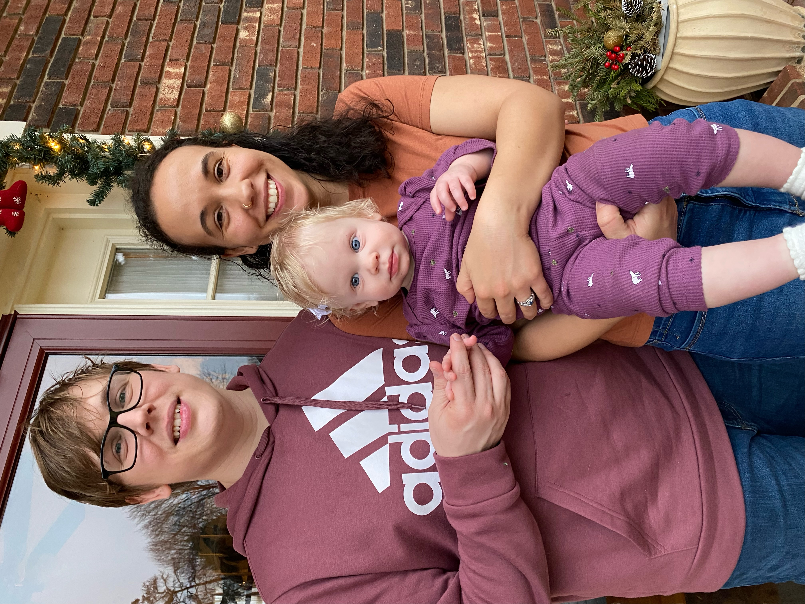

Summary
I am seeking a Web Developmet job that is remote
Education
- Bachelor's in Buisness Analytics from University of Charlotte-2022
- Associate Degree in Science from Gaston Community College-2021
- Associate Degree in Applied Science Physical Therapy Assistant-2019
Work Experience
- Physcial Therapy Assistant- Caromont Regional Medial Center: 2019-present
- Certified Nursing Assisant- Caldwell Memorial Hospital: 2016-2018
Skills
Proficient in:
- Excel
- Microsoft Teams
- Epic

Hobbies |
Contact Me